Amendment #120 (S.O. 291(E), 1977)
8 changes: 3 to the First Schedule, 5 to the Second Schedule. 8 applied
What it did to the ministries
- moved43 subjects move from Cabinet Secretariat to Ministry of Home Affairs change 2, 3, 7, 8 · histories: Cabinet Secretariat, Home Affairs
- renamedMinistry of Health and Family Planning is renamed Ministry of Health and Family Welfare change 1, 5, 6 · histories: Health and Family Welfare
The order, page by page
Page 1 of 12
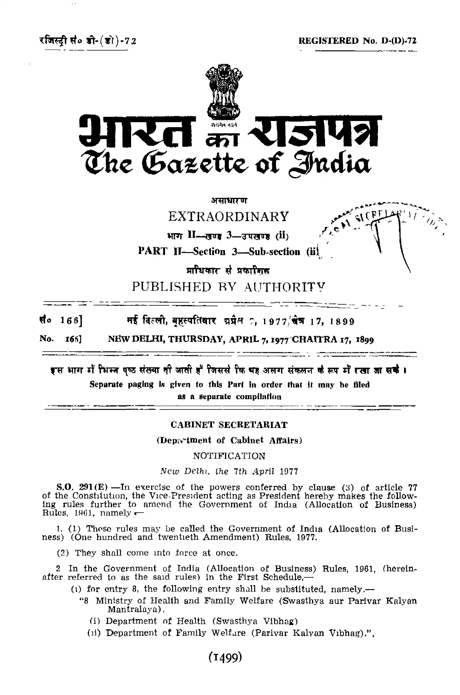
1Schedule 1 › entry 8
- 8. Ministry of Health and Family Welfare
- i. Department of Health ( 11 ) Department of Family Welfare
applied at schedule 1 › ministry 8 in the Rules after #120
read page break
Page 2 of 12
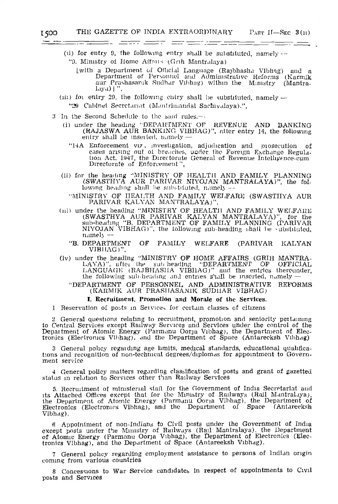
234567Schedule 1 › entry 9
- 9. Ministry of Home Affaus
- -. Department of Official Language (Rajbhasha Vibhag) and Ɑ
- Department of Personnel and Administrative Reforms (Karmik nur Prashasanık Sudhar Vibhag) within the Ministry (Mantralaya)]
applied at schedule 1 › ministry 9 in the Rules after #120
Schedule 1 › entry 29
- 29 Cabinet Secretariat (Mantrimandal Sachivalaya).
applied at schedule 1 › department 29 in the Rules after #120
after Schedule 2 › DEPARTMENT OF REVENUE AND BANKING › entry 14
- 14A Enforcement viz, investigation, adjudication and prosecution of cases arising out of breaches, under the Foreign Exchange Regulation Act, 1947, the Directorate General of Revenue Intelligence-cum Directorate of Enforcement
applied at schedule 2 › ministry DEPARTMENT OF REVENUE AND BANKING › entry 14 in the Rules after #120
Schedule 2 › MINISTRY OF HEALTH AND FAMILY PLANNING
- MINISTRY OF HEALTH AND FAMILY WELFARE
applied at schedule 2 › ministry MINISTRY OF HEALTH AND FAMILY WELFARE in the Rules after #120
Schedule 2 › MINISTRY OF HEALTH AND FAMILY WELFARE › DEPARTMENT OF FAMILY PLANNING
- B. DEPARTMENT OF FAMILY WELFARE
applied at schedule 2 › ministry MINISTRY OF HEALTH AND FAMILY WELFARE › department B in the Rules after #120
after Schedule 2 › MINISTRY OF HOME AFFAIRS › DEPARTMENT OF OFFICIAL LANGUAGE
- DEPARTMENT OF PERSONNEL AND ADMINISTRATIVE REFORMS
- I. Recruitment, Promotion and Morale of the Services.
- 1. Reservation of posts in Services for certain classes of citizens
- 2. General questions relating to recruitment, promotion and seniority pertaining to Central Services except Railway Services and Services under the control of the Department of Atomic Energy (Parmanu Oorja Vibhag), the Department of Electronics (Electronics Vibhag), and the Department of Space…
- 3. General policy regarding age limits, medical standards, educational qualifications and recognition of non-technical degrees/diplomas for appointment to Government service
- 4. General policy matters regarding classification of posts and grant of gazetted status in relation to Services other than Railway Services
and 81 more
- 5. Recruitment of ministerial stall for the Government of India Secretariat and its Attached Offices except that for the Ministry of Railways (Rail Mantralaya) the Department of Atomic Energy (Parmanu Oorja Vibhag), the Department of Electronics (Electronics Vibhag), and the Department of Space…
- 6. Appointment of non-Indians to Clvl posts under the Government of India except posts under the Ministry of Railways (Rail Mantralaya), the Department of Atomic Energy (Parmanu Oorja Vibhag), the Department of Electronics (Electronics Vibhag), and the Department of Space (Antareeksh Vibhag)
- 7. General policy regarding employment assistance to persons of Indian origin coming from various countries
- 8. Concessions to War Service candidates In respect of appointments to Civil posts and Services
- 9. General policy regarding resettlement of displaced Government servants from areas now in Pakistan, and retrenched temporary employees
- 10. Concessions to political sufferers in the matter of first appointment or reappointment to the Public Services
- 11. General policy regarding grant of extension to or re-employment of superannuated officeis
- 12. Issue of certificates of eligibility for appointment to Civil Services and posts under the Union in respect of persons other than Indian citizens
- 13.
- a. Deputation of Indian experts abroad under the Indian Technical and Economic Cooperation Programme of the Ministry of External Affaus (Videsh Mantralaya) and on bilateral basis of the developing countries of Asia, Africa and Latin America
- b. Deputation of officers for placements with the United Nations and its allied agencies, as also with other infernational agencies, like ILO, FAO, etc
- 14. General policy regarding verification of character and anterodents—sultability of candidates for appointment to Government service
- 15. Policy matters relating to issue of 'no objection' certificates in serving personnel for registration with the Employment Exchange for higher posts
- 16. Matters relating to Personal Staft of Ministers
- 17. Re-deployment of stall rendered surplus in Central Government offices as a result of —— (1) admistrative reforms (11) studles made by the SIU
- ii. winding up of long term but temporary organisations.
- 18. Advising Ministries on proper management of various cadres under then control II Training
- 19.
- a. Formulation and coordination of training policies for the All India and Central Services
- b. National Academy of Administration and Secretariat Training School
- c. Training programmes for the Indian Administrative Service, Central Secretariat Service, Indian Economic Service and Indian Statistical Service.
- d. Preparation and publication of training material and of information of train ing techniques, facilities and piogramues
- e. Liaison with training institutions within the States and abroad
- f. Refresher and special courses for Middle and Senior Management levels III Vigilance and Discipline
- 20.
- a. The Prevention of Corruption Act, 1947, the Central Bureau of Investigation (the Delhi Special Police Establishment including the Legal Division, the Technical Division, the Policy Division and the Administration Division), the Food Offences Wing and feouninig Offences Wing
- b. Accord of sunction for the prosecution of any peison for any offence investigated into by the Delu Special Police Establishment where such sanction is required to be accorded by the Central Government Nora – Sanction for the prosecution of any person for any offence not investigated into by the…
- c. Central Vigilance Commission
- d. All policy matters pertaining to vigilance and discipline among public servants
- e. Relationship between members of Parliament and the Administration
- IV. Service Conditions
- 21. General questions (other than those which have a financial bearing) including conduct Rules relating to All India and Unlon Public Service except in regard to services under the control of the Ministry of Railways (Rail Mantralaya), the Department of Atomic Energy (Parmanu Oorja Vibhag), the…
- 22. Conditions of service of Central Government employees [excluding those under the control of the Ministry of Railways (Rail Mantralaya), the Department of Atomic Energy (Parmanu Oorja Vlbhag), the Department of Electronics [Electronics Vibhag), and the Department of Space (Antareeksh Vibhag)] other…
- 23. Leave travel concession for civil employees other than Railway employces.
- 24. The Central Services (Temporary Service) Rules, 1949
- 25. General policy regarding retrenchment and reversion of temporary Government servants except those under the Ministry of Railways (Rail Mantralaya).
- 26. Administration of the Central Services (Safeguarding of National Security) Rules.
- 27. Uniforms for Class IV and other Government servants in the Central Secretariat, and its attached offices
- 28. Working hours and Holidays for Government of India offices
- 29. Administration of service rules with financial content under specific delegation made by the Ministry of Finance (Vitta Mantralaya)
- 30. Advice on proposals in respect of the Ministry of Finance (Vitta Mantralaya) relating to the number or grade of posts or to the strength of a Service or to the pay and allowances of Government servants or any other conditions of their service having financial implications
- 31. General policy regarding reimbursement of legal expenses incurred by Government servants
- 32. Proposals for grant of ex-officio Secretariat status
- 33. Honorary appointments of persons in civil posts
- 34. Oath of allegiance to the Constitution
- V. Senior and Middle Managements
- 35. All aspects of Senior Management (ie, Joint Secretaries and above and their equivalents) including development of personnel for it
- 36.
- a. Establishment Officer to the Government of India
- b. Appointments Committec of the Cabinet
- c. Central Establishment Board
- d. Career Development for Middle Management (1e, Directors, Deputy and Under Secretaries and their equivalents) VI Government Employees Relations, including Staff Grievances and Welfare
- 37.
- a. Service Associations of the Industrial and non-industrial employees of the Government of India
- h. Joint Consultative Machinery, Departmental Council for the Department of Personnel and Administrative Reforms (Karmik aur Prashasanık Sudhar Vibhag)
- c. Machinery for the redress of staff grievances
- d. Staff welfare including sports, cultural activities, Grih Kalyan Kendras Canteens, Cooperative Stores, etc
- e. Other matters involving Government-Employees relations not specifically provided for under any other entry relating to the Department.
- VII. Unton Public Service Commission
- 38. Union Public Service Commission VIII Centralised aspects of managing IAS, inter-Ministry cadres, including a career Planning for the Members thereof
- 39.
- a. Creation of new All India Services
- b. Rules and Regulations under the All India Services Act
- c. All matters relating to the Indian Administrative Service including the Indian Civil Service
- d. All India Civil List and History of Services.
- c. Central Secretariat Service, Central Secretariat Stenographers' Service and Central Secretallat Clerical Service
- f. Indian Statistical Service and Indian Economic Service
- IX. Career Planning and Manpower Planning
- 40.
- a. General Policy questions regarding Career Planning and Manpower Planning for the All India and Central Government Services
- b. All maters pertaining to Career Planning and Manpower Planning for the Indian Administrative Service, Central Secretarial Services, Indian Statistical Service and Indian Economic Service. X Personnel Management Agencies
- 41. Co-ordination of the work of personnel management agencies within various Ministries
- XI. Research in Personnel Administration, etc
- 42. Rescarch in personnel Administration; liaison with State Governments, professional institutions etc, in personnel matters XII Allocation of personnel and Integration of Services as a result of States Reorganisation
- 43.
- a. Allocation of service personnel affected by reorganisation of States
- b. Division and integration of services aflected by the reorganisation of States other than in Union Territories
- c. Protection of service conditions of personnel affected by re-organisation of States
- d. Other matters relating to Slate Services affected by the re-organisation of States XIII, Administrative Reforms
- 44. Administrative Reforms
- 45. Organisation and methods
applied at schedule 2 › ministry MINISTRY OF HOME AFFAIRS › department DEPARTMENT OF PERSONNEL AND ADMINISTRATIVE REFORMS in the Rules after #120
read page break
Page 3 of 12
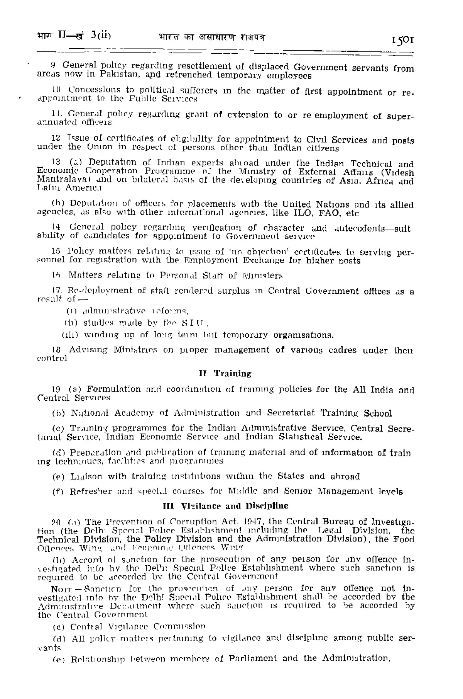
Page 4 of 12
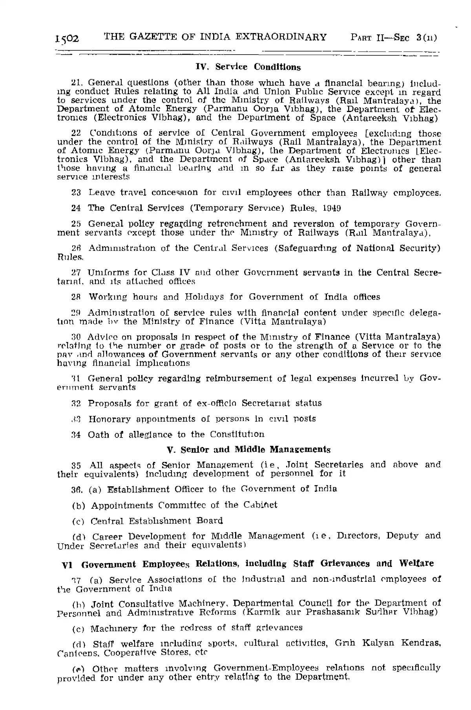
Page 5 of 12
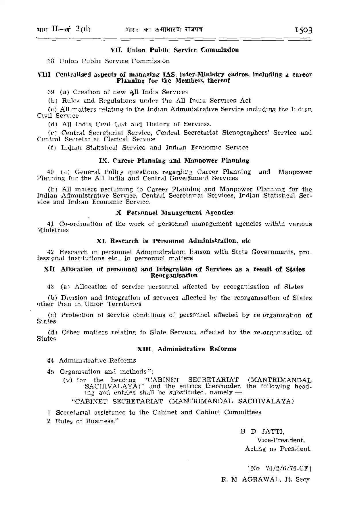
8Schedule 2 › CABINET SECRETARIAT
- CABINET SECRETARIAT
- 1. Secretarial assistance to the Cabinet and Cabinet Committees
- 2. Rules of Business.
applied at schedule 2 › ministry CABINET SECRETARIAT in the Rules after #120
Page 6 of 12
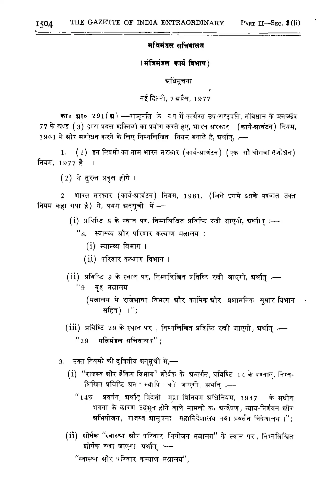
Page 7 of 12
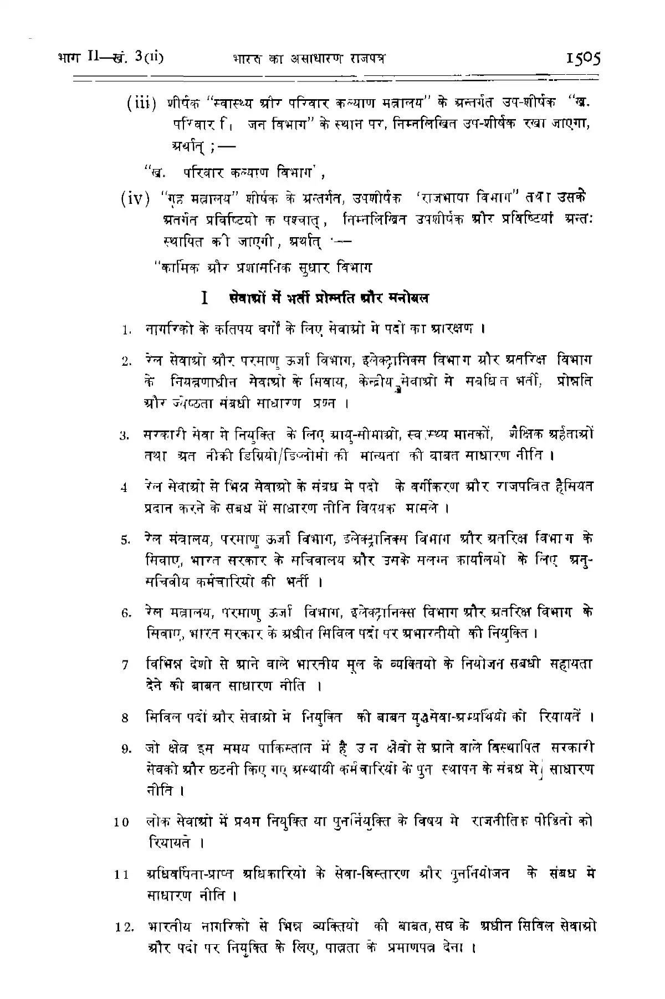
Page 8 of 12
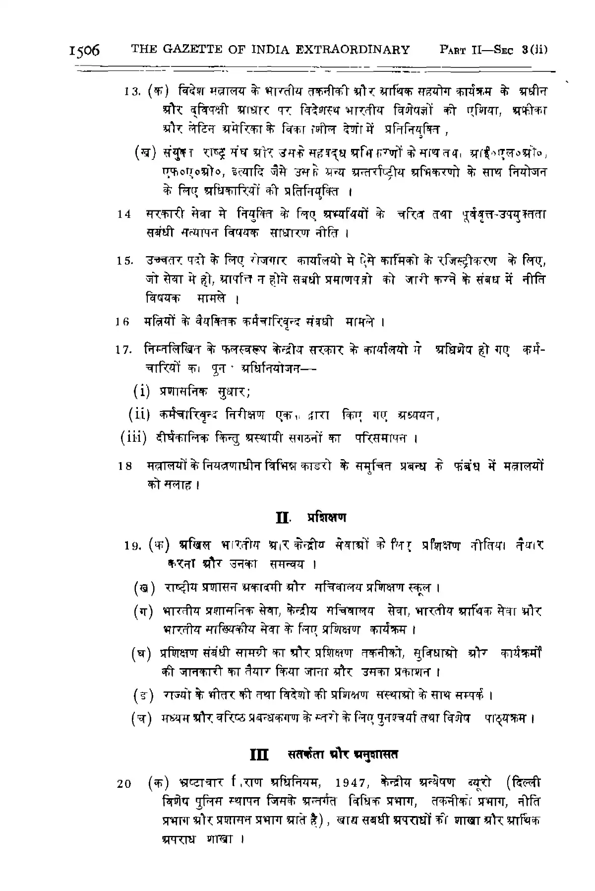
Page 9 of 12
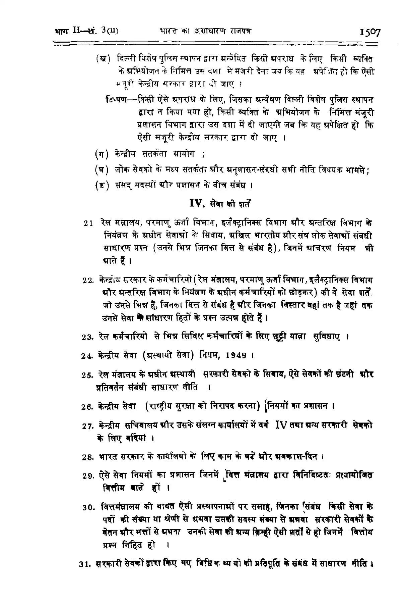
Page 10 of 12
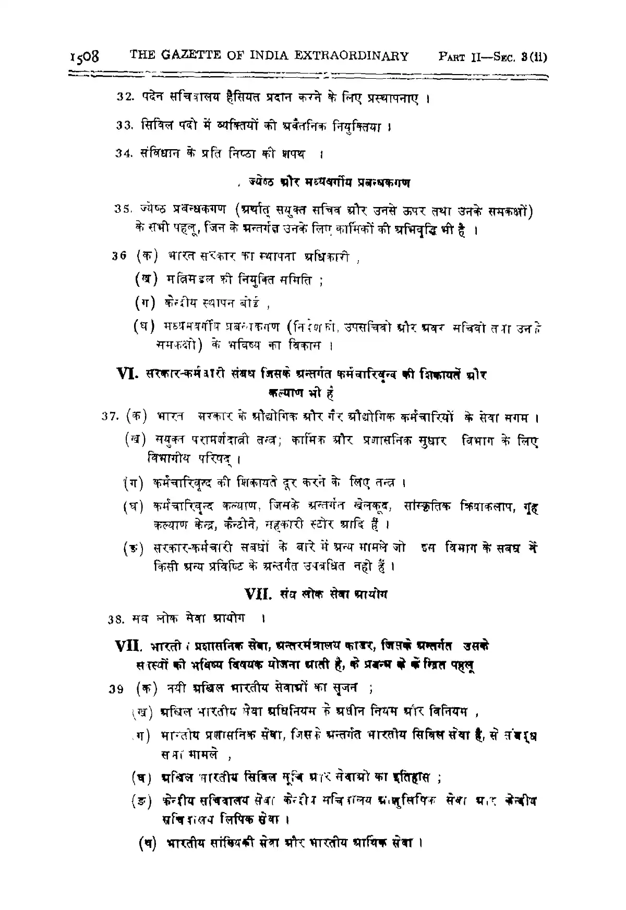
Page 11 of 12
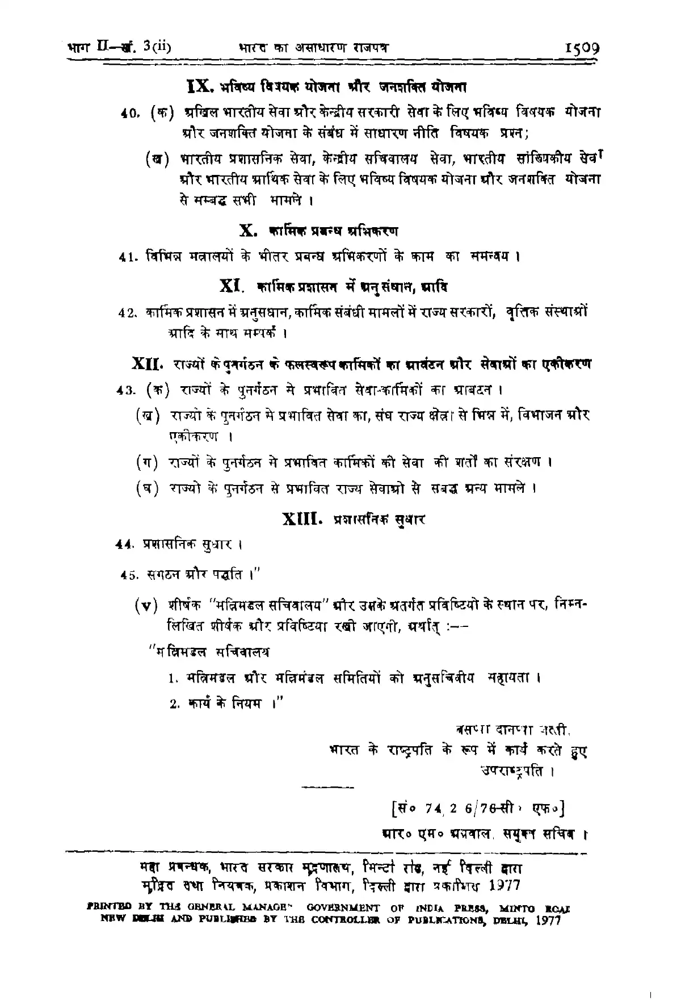
Page 12 of 12
How this document was read
From the Government of India (Allocation of Business) Rules, 1961 and their amendments, as published by the Cabinet Secretariat (cabsec.gov.in), read by orgpedia. The readings of the older scanned gazettes have known gaps.